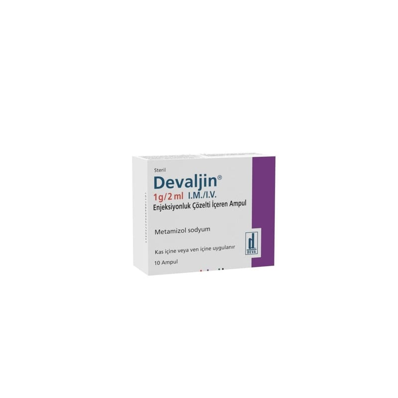

Devaljin 1 g/2 ml I.M./I.V. Enjeksiyonluk Çözelti İçeren Ampul 50 Ampul

Ne için kullanılır
KT · Bölüm 1DEVALJİN, metamizol sodyum etkin maddesini içerir ve renksiz-açık sarı, kokusuz, berrak çözeltidir. Bir ampul içinde 1 g metamizol sodyum vardır. Bir ampul içinde 2 mL çözelti bulunur ve çözeltinin 1 mL’sinde 500 mg etkin madde bulunur. 5, 10, 50 ampullük ambalaj ile 50, 100, 200 ampul içeren hastane ambalajında kullanıma sunulmuştur.
DEVALJİN, pirazolon grubuna ait ağrı kesici ve ateş düşürücü olarak kullanılan bir ilaçtır.
DEVALJİN aşağıdaki durumların tedavisi için kullanılır: - Yaralanma veya cerrahi sonrası ani gelişen (akut) şiddetli ağrı - Kramp benzeri karın ağrısı (kolik) - Kansere bağlı ağrı (tümör ağrısı) - Başka bir tedavinin mümkün olmadığı diğer akut veya kronik şiddetli ağrı - Diğer önlemlere yanıt vermeyen yüksek ateş DEVALJİN yalnızca, diğer formlarla (tablet, şurup veya oral damla) tedavinin mümkün olmadığı durumlarda kullanılmalıdır.